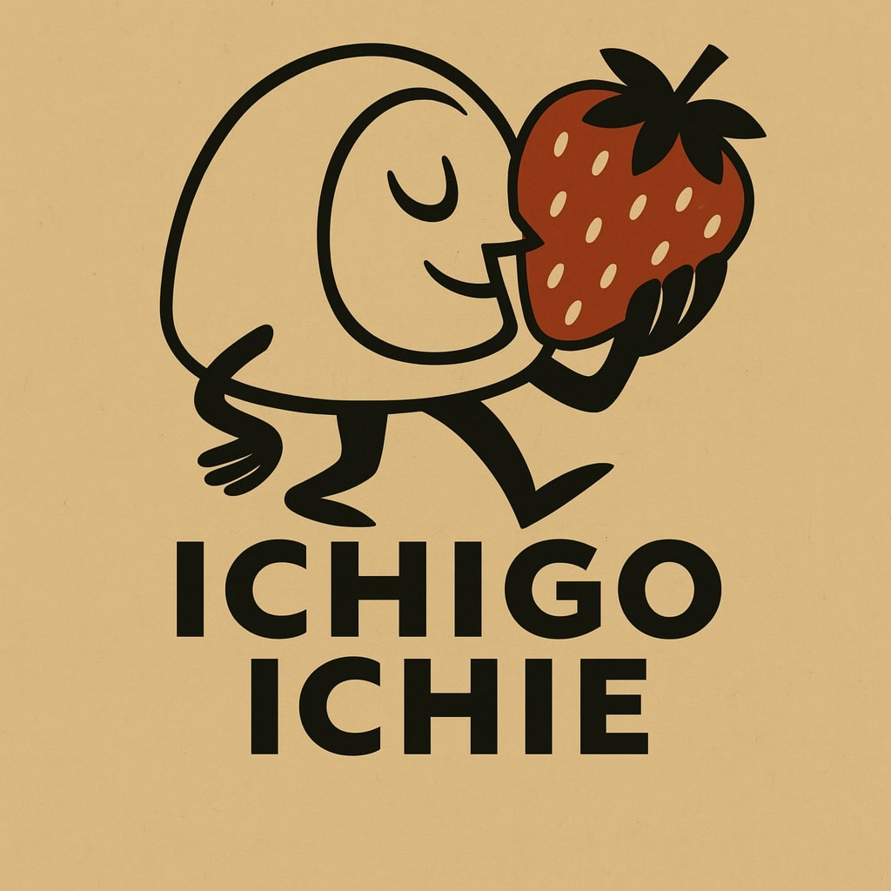
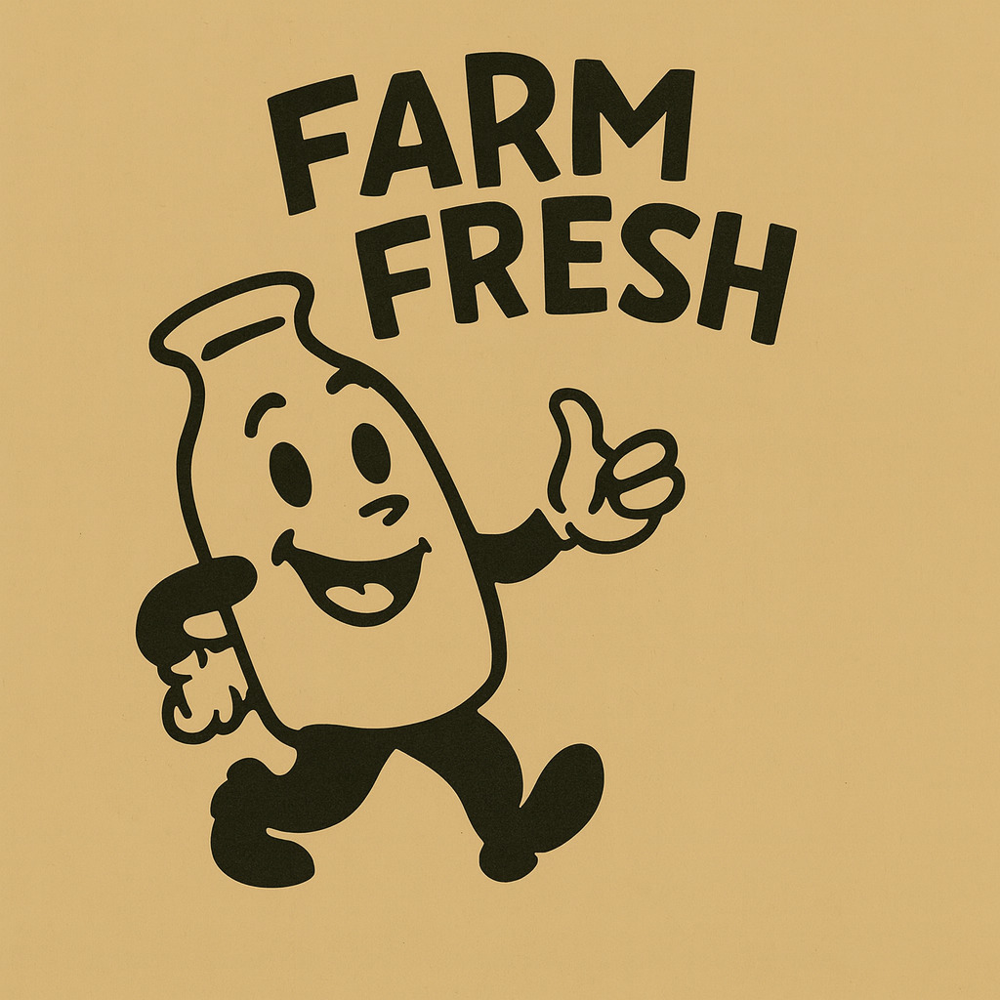
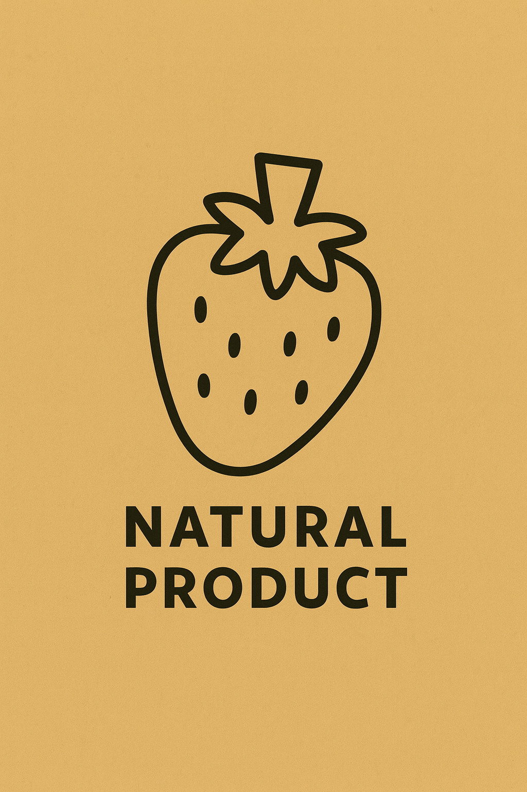

Discover our delicious Strawberry Daifuku, made with the freshest ingredients and a lot of love. "Ichigo Ichie" means "once in a lifetime," and we believe every moment should be savored, just like our sweets.


Daifuku is a traditional Japanese sweet, a small round mochi stuffed with a sweet filling. Our specialty is Ichigo Daifuku, which features a whole fresh strawberry inside, surrounded by sweet red bean paste and covered in soft, chewy mochi.